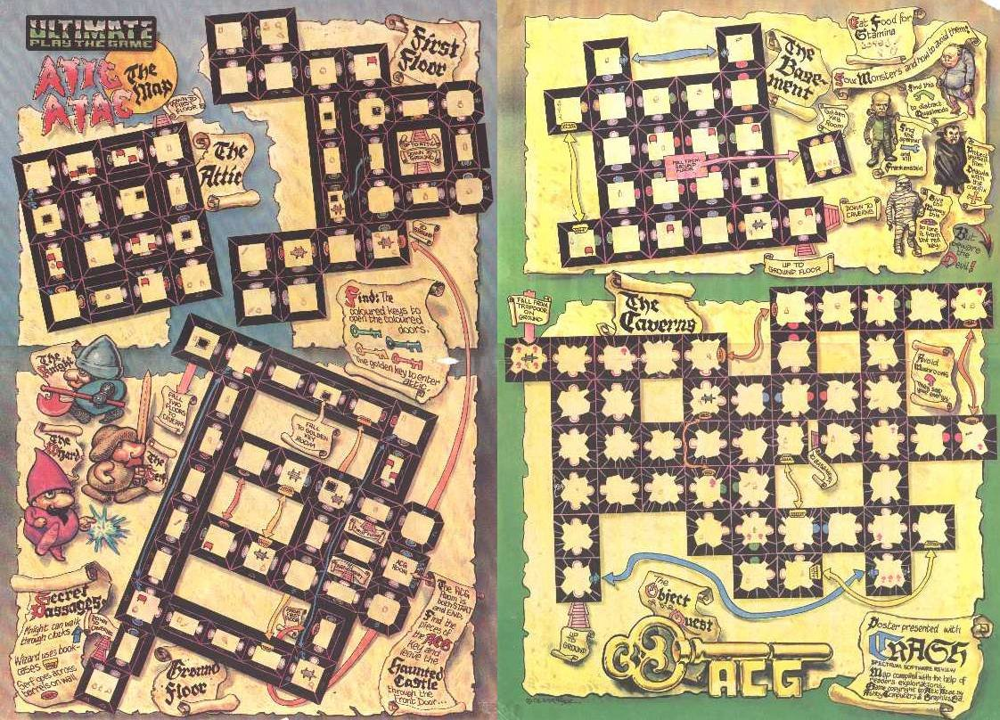
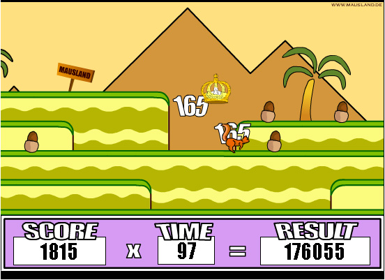
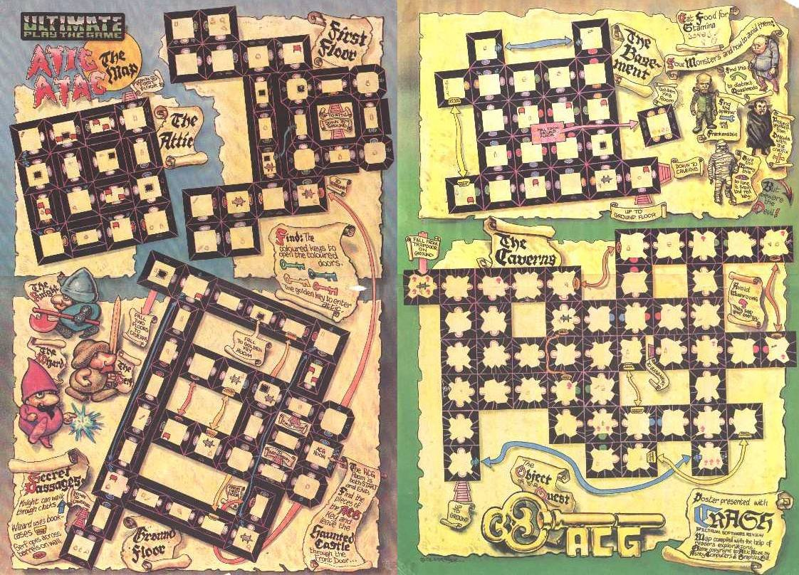
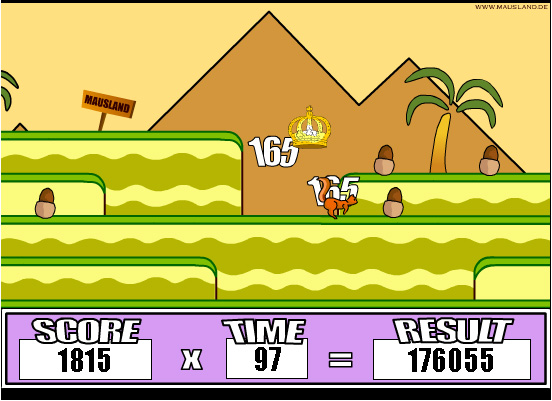
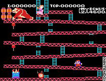
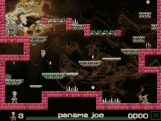
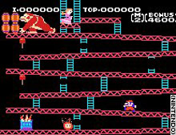
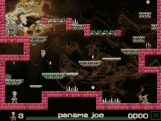
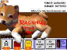
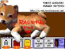

GOOGLE AD:
DOG COYOTES: PROFESIONAL NAGUAL SERVICES
CROSS THE BORDER IN ANOTHER SHAPE AND REUNITE YOURSELF WITH YOUR FAMILY AND YOUR WORK
FREE CONSULTATION WITH A MESOAMERICAN METAPHYSICS EXPERT


March 3, 2026: Virtua Fighter
The ex-ice factory was partially burnt years ago by some adolescents, although quiet rumors circulated that it happened during a narco battle. From the street, long decomposing stairs led up to an open cement platform. There were no longer any walls, only some columns of bricks and support wires that framed distant views: to the town and its church on one side, and to the coastal hills illuminated by the last rays of the sun on the other side. It was like a greek theater in ruins, covered in a layer of broken glass, garbage and empty bottles.
Maura was already there in a tank top and loose pants when we arrived. She gave me a broom and made me sweep. Hilos played with a dry coconut as if it were a ball, growling at it and throwing it into the air with his teeth. While I cleaned, which to me did not seem very educational, Maura circulated through a series of strange movements and exercises that reminded me of the Kung Fu movies that appear on on Sunday afternoon TV, even though Maura's movements did not chop the air as much with her hands. She pounded, pulled and punched an invisible opponent with her entire body, never losing her balance or displaying too much effort. Hilos stopped playing with his coconut and stilled into an alert sitting position, fascinated by Maura.
When I had swept a big clean circle on the floor, Maura indicated that it was time to start the second part of the lesson. Imagine you are my enemy. Attack me with all your force with all the weapons at your disposal, pointing to the broom in my hand. I swung the broom in an arc towards Maura, yelling to warn of my attack, which seemed a bit unfair since she didnt have any weapon. Without knowing how, I found myself lying flat on my back on the floor, staring up at the clouds.


 

Feb 19, 2026: A new apprenticeship
It was a hot and heavy afternoon and I slept in the hamack in front of Janaina's store. I had a nighmare that I was walking with Hilos and we heard something big and hungry approach. I tried to place myself between Hilos and the predator but Hilos jumped in front of me growling and dissapeared into the plants. Then the jungle started to bleed a thick, black liquid. In spite of the climate a shiver ran down my back and I felt a great sadness enter without knowing why. When I woke up I was still trembling. Daylight was falling and I ran all the way to Hilo's hut. Instead greeting me with his customary jumps of joy, which now that he was almost adult size almost knocked me over, there was nobody there. I saw some drops of blood on the earth near the entrance. I followed them till I found Hilos prostrate on the ground near a rock, panting with three deep cuts in his ribs.
I made him chew on some coca leaves with water for the pain. Luckily they had been drying on top of the hut because recently I had gathered plants with Janaina for the store. I checked my cell phone and as I feared there was no reception. I sat down on the ground and closed my eyes. I tried to empty my mind of all worries and thoughts. When at least my breathing deaccelerated, I concentrated on sending a message asking for help to Janaina, imagining the hut and Hilos with his injuries to indicate what it was about and where we were. I felt a response, like a finger pushing the perifery of my thoughts. Then while waiting I concentrated on flowing a river of healing energy from my center to Hilos. I heard his panting calm down.
When after about what seemed to be an interminable half hour Janaina appeared she was not alone. Maura, the young woman from the Internet cafe, was with her. I guess she was pretty, because the boys at school joked about her, but it was not the good looks of movies that I admired. She had partially cut off curls that escaped in all directions and she didnt wear makeup, except for pinkish almost orange lipstick. When they got here my great aunt made us carry Hilos into his hut and she hung a lamp from the cieling. She pulled out various herbs from her bag and mixed them in a stone grinder to remove their essences. She covered Hilos' wounds with this mixture and she gave him water and a powder which pushed him into a profound sleep. Then she announced that he would recover slowly within a week. Mercedes, you need to reapply the medicine every night.
Relieved, I carresed Hilos' head and exited the hut with Janaina and Maura. Speaking to my great aunt, (I didnt know why she had brought Maura because she seemed to know less of healing than I did), I told her about my dream of Hilos and the danger that threatened us. Yes, my child, she responded, it is now time for you to continue your education with another teacher so that you both learn to defend yourselves. I looked suspicicusly at Maura who didnt say anthing, and only stood as if she were a statue with tiny smile on her face. Maura has agreed to teach you both the martial arts of the naguales and the necessary steps for corporal exchange. Anway, even though you have improved substantially, I dont think your primary talent is the curanderia. Your efforts in the kitchen always need interventions, smiled my great aunt. I was offended and I was going to protest that Janaina always drank my hot chocolate with great pleasure. Also I was confused by "teaching you both", who was I going to learn with? Finally Maura spoke in a deep, soft voice. In two weeks, Wensday at four in the afternoon you will meet me, you and Hilos, at the abandonded ice factory at the entrance to the town.
 



 

Feb 2, 2025: Forgettable days
I woke up in bed, in my great auntie's house. Wow, auntie, what a wierd dream I had..I dreamed I found a dog and then..I touched my thigh and found the symbol. My great aunt entered the room and sat beside me, clasping my hand. You were asleep for a whole day girl. I told everybody you had the flu. You have a special power but you need to carefully hide it while you are still young and Hilos is still small, and even when you are grown you will learn to hide it. Hilos is alive! I interrupted, filled with joy. Yes, but that is also a secret. You can only see him at night in the woods and you can learn to dream with him. You will need to educate him and feed him while he is still small. ..Yes yes whatever I need to do!
Things continued on the same as before but not identically. I went to school in the mornings and in the afternoons I stayed in my great aunt's store. At night I returned home with my mother but sometimes I stayed with my great aunt when my mother was busy. On top of the homework I was required to do for school, (and it wasnt very difficult for me to maintain a basic level of good grades), my great aunt, who I now called by her curandera name Janaina, gave me work to accomplish every week. I needed to learn to breathe with the elements outside of my body. I breathed with the branches and the wind, the wings of moths and below with stream water passing over sun warmed rocks. Closing my eyes I learned to focus the energy of the earth and the air and even to pull it, (contaminated as it might be from envy, human desires and black smoke) from the village. I compressed it into a heavy and sticky sphere between my hands and with this sphere I learned to twist and move a pencil and other small objects in any direction I desired. Janaina taught me the names of herbs and sometimes we searched for them together in the forest. She told me which illnesses they were good for treating and at each meal she taught me to cook for healing. Yellow chiles to wake someone up from a depression, red ones for opening the heart to love, and acid herbs to clean the blood.
Meanwhile I took care of Hilos, who was growing into a fat, playful and brave puppy, and who liked to jump, run, and attack naughty sticks. According to Janaina's strict instructions, Hilos could only survive in a moon dimension while he was growing and we could only see eachother at night. To protect him from the elements and from predators I built him a small hut made of dry branches near the witches pyramid. Every night I brought him rice and a little meat or beans, eggs or milk, that I saved from the afternoon meal. After eating his "breakfast" we would walk, explore and play while the moonlight lasted. Seeing him so free and happy was a joy for me though he always looked on me with sad eyes when it was time for me to go home to sleep.


Feb 1, 2025: The Moon
Hilos didnt move. While tears silently dripped from my cheeks I left the house carrying Hilos wrapped in the same sweater from the morning. I walked for a long time in the forest without awareness of where my feet were going. I had never been in the forest at night before but the moon illuminated the pathways like rivers of silver. After I dont know how long, I stopped in front of large rock and rested.
I saw what appeared to be some figures on the peak of the next hill. I walked a bit closer to investigate. One of shapes reminded me of my great auntie. They were were swaying in a gentle rythme, standing in a circle. Suddenly I felt a hand on my shoulder. My girl, what have you got there my great aunt asked me. I didnt understand how she could have moved so quickly to my side. Its Hilos, I said, my voice rough from so many tears. I need to bury him and I pulled the sweater back to show her. She tenderly touched Hilos' head. Gerardo has always been an ignorant idiot. I didnt understand how she had found out about what had happened in my grandfather's house.
Be quiet girl, there is still alot in this world and beyond that you still dont understand when I opened my mouth to ask her how she knew. Hurry up, there is not much moonlight left for us. She guided me to the other shadows, and I saw that the peak of the hill was not entirely natural and showed signs of a small prehispanic pyramid. I recognized certain grandmothers and ladies from the village, like the goat milk caramel seller and the young lady from the internet cafe. The rest were strangers. Isnt she too young? asked one of the strangers, a mulatto with a handsome profile. My great aunt placed Hilos on top of a rock that functioned as a central table. Then she covered Hilos' little body with dry and strong smelling herbs, of the type she would store in the corner of her store. She placed two bouquets of flowers in each of my hands and pushed me until I almost bumped into the table. She pronounced some words I didnt understand and in an unarguable voice she ordered me to lift my arms and spin in circles without stopping.
The figures surrounding me blurred. The moonlight was very strong and I felt more and more dizzy, almost like I was floating above everything. I heard some howls and it seemed like some big dogs must have joined the circle. My greant aunt approached with a triangular instrument lit with a cool blue flame. With a rapid movement she touched Hilos with this instrument and then she stopped me from spinning, lifted my skirt, and with the same impliment imprimented a simple symbol on my left thigh. I was frozen with fear but felt no pain. The crude tattoo began to glow with the same blue light of the instrument. I think I heard some small high-pitched barks. Then I lost conciousness.


Jan 22, 2025: dog coyotes a blognovela of the nagual (shapeshifting) future
I am fifteen years old and I was born in 2010. Sometimes people called me blondie even though my hair is more black than the forest on a night with no moon. My mother said I had eyes like a clever cat: shiny and green with yellow stripes. My grandfather, when he reeked of whiskey, said I had eyes like a fucking witch like his exwife's sister.
When I was a little girl I lived in the little town of Cruces in the mountains of the state of Guerrero. The tourist books said that our state was very dangerous, that there was a lot of violence between drug traffickers and government soldiers. Tourists never visited our village from anywhere, except for the pilgrims who came to celebrate our saint's birthday, and they were mostly Mexicans from Guerrero. As little girl I was oblivous to all this. I spent my days between my great auntie's store and the school where my mother was a teacher. My mother had lived for ten years in Acapulco and sometimes she told me stories about the beach and complained about the cold and the rain of our mountains and also about how small and ignorant our town was-- only one internet cafe, only one disco, and only one school. But most of the time my mother was busy with her new beau. My father had died (or dissapeared?) when I was still a baby.
I didnt play much with the other kids. I was regarded suspiciously because I didnt have a papa. I liked to explore the forest that surrounded our town. I looked for magic pathways thinking they might take me to enchanted animals or bring me to meet mystic ancestors, (our town, like lots of old mexican towns, was built near indiginous ruins.) I collected flowers and leaves to construct magic chains of protection. Sometimes during my exploratorations I brought along books of fairytales I found in a dusty box in the back of the store where my great auntie lived.
One weekend when I was 11 my mother went with her boyfriend to Acapulco and left me with my grandfather. I asked my mother why? Why couldnt I stay with my great auntie instead? I liked to help her in her store where other grandmothers gathered and gossiped, watching soap operas on TV, sometimes drinking a little beer in the heat of summer. Its better if you stay with your grandfather my mother said. You should get to know him better. You can always call me on my cell if you miss me. I was afraid of my grandfather. He lived alone in a big dark house on the central street of the town. He always smelled like cigarettes and whiskey. He was a police officer and he was always making jokes I didnt understand but that somehow seemed to be maliciously making fun of people. My grandfather would say that my mother should marry again to give him grandsons whom he could educate as men of the law. He would lament that his two sons, my uncles who I had never met, lived so far away in the United States. My grandfather almost never talked to me.
I spent the morning in the woods, counting my steps on a new pathway to see if they added up to a special number, (I liked the numbers that reflected themselves, like 44). On step 22 I heard some whines behind a fallen tree. I climbed onto the tree to see what was there and my chain of wildflowers broke and fell out of sight into a deep ravine on the other side of the tree. But a few steps away from me, curled onto a ledge, was a yellow puppy with sad, brown and gold colored eyes. Where is your mommy? I asked it. It cried more. Its ribs almost poked out of its skin. You must be very hungry I said. Lets see if I can find you some milk. I pulled him out of his hiding spot and brought him with me to the house, wrapped in my sweater. He was so thirsty he tried to suck my fingers.
At that moment the door to my room opened. I thought it would be my grandfather but it was one of his friends, Pollo, a policeman and son of the sheriff. You have almost become as pretty as your mother he said as he stepped into the room. His nose was very red and he smelled like alchohol even stronger than my grandfather usually did. Thank you sir, I am already eleven years old now, I said stepping in front of the bed to block the view of Hilos. He pinched my cheek, and I have never liked it when adults pinch my cheeks. Well I need to go to sleep, have a good night, I told him, trying to say goodnight. Oh yes, but before you go to sleep give me a little loving, my little witch, it will be our secret and if you say anything to anyone I will kill that puppy you are trying to hide from me. He was smiling and my attention was drawn to a tattoo of a crab on his arm.
Suddenly he grabbed me and I involuntarily gasped with
surprise and fear. He threw me onto the bed. My hands
searched for something on the bedside table to defend myself with
but I only found a pen. He pinned me down with one hand
while he unzipped his pants. With all my strength I poked the
pen into his right eye and an arc of blood
streamed out of it. It felt very strange, like I had
punctured a rubber ball. Pollo screamed and my grandfather
entered, blinking away sleep. What have you done little girl!
All I could do was sob. My grandfather saw Hilos and he
got even more angry. Your bring animals into my house!
Pollo left the room cursing with one hand applying pressure
to his wounded eye. I cant believe this, my grandfather said when
he saw the blood stains from Pollo. You are a witchy
seductress like your great aunt, and he kicked Hilos so hard
that he slammed into the wall. Then he exited banging the
door.
My Profile
Comments:
Jan 22, 2025: dog coyotes a blognovela of the nagual (shapeshifting) future
Feb 1, 2025: The Moon
Feb 2, 2025:
Forgettable Days
Feb 19, 2026:
A new apprenticeship
March 3, 2026:
Virtua Fighter